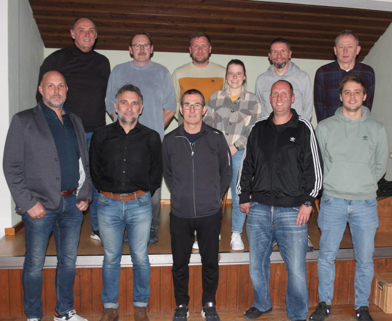

Aktuelle Vorstandschaft (bis November 2027)
Vorstandschaft
| Erster Vorstand | Tobias Führmann |
| Zweiter Vorstand | Gerhard Kettl |
| Kassenwart | Franz Salzberger |
| Schriftführer | Gerhard Kettl |
| Platzwart 1 | Thomas Ebner |
| Platzwart 2 | Edmund Götzensberger |
| Sportwart | Stefan Salzberger |
| Jugendleitung | Stefan Weinmann |
| Beisitzer 1 | Sabine Bauriedl |
| Beisitzer 2 | Simone Gabler |
| Beisitzer 3 | Rudolf Freundorfer |
| Beisitzer 4 | Tobias Steinherr |
| Beisitzer 5 | Christian Weinmann |
| Beisitzer 6 | Sven Huber |
| Ehrenvorstand TC Oberpöring | Franz Bauriedl |
| Ehrenmitglied TC Oberpöring | Erwin Heigl |

Die aktuelle Vorstandschaft des TC Oberpöring.
Hinten von links: Gerhard Kettl, Edmund Götzensberger, Sven Huber, Sabine Bauriedl, Stefan Weinmann, Franz Salzberger Vorne von links: Tobias Führmann, Rudolf Freundorfer, Thomas Ebner, Tobias Steinherr, Stefan Salzberger Auf dem Bild fehlen: Simone Gabler und Christian Weinmann.
Aus dem Kreise der Vorstandschaft verabschiedet wurden: Lisa Amann (4 Jahre Jugendleitung, 4 Jahre Beisitzerin) und Reinhard Wagner (4 Jahre Beisitzer) Herzlichen Dank an Lisa Amann und Reinhard Wagner für ihre langjährige Tätigkeit in der Vorstandschaft des TC Oberpöring!

Lisa Amann, Tobias Führmann, Gerhard Kettl

Tobias Führmann, Reinhard Wagner, Gerhard Kettl